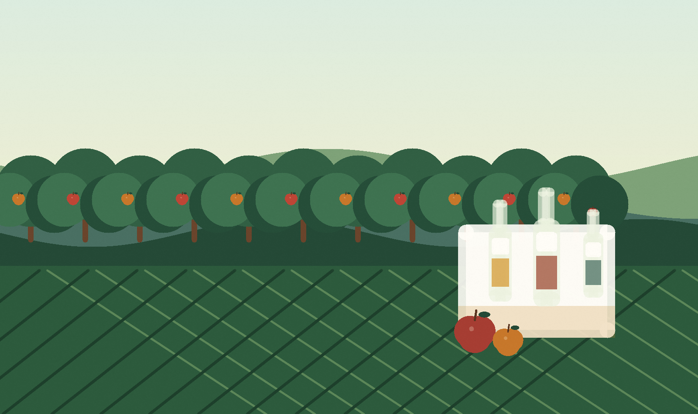
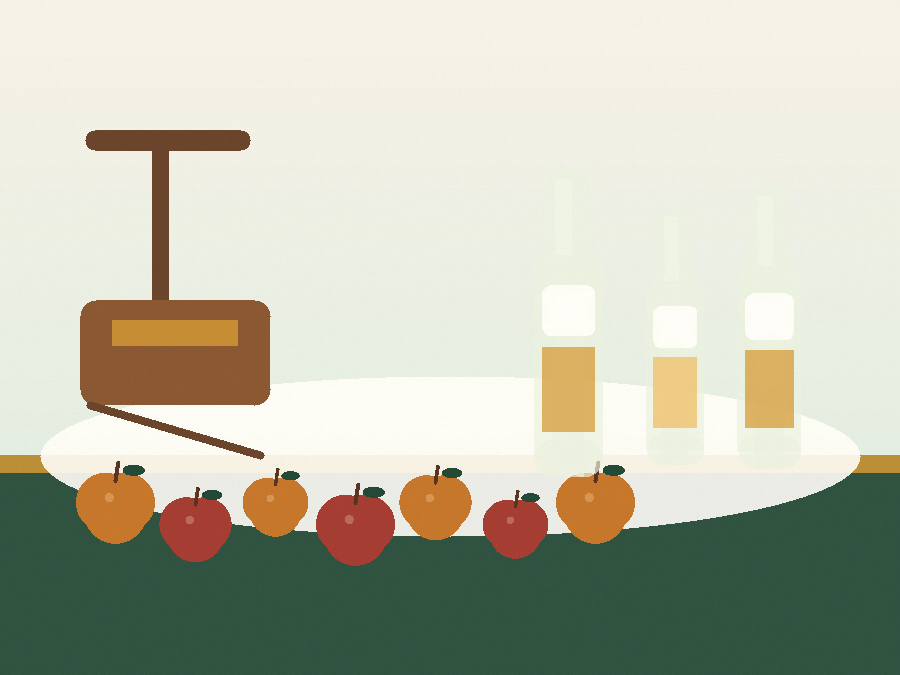
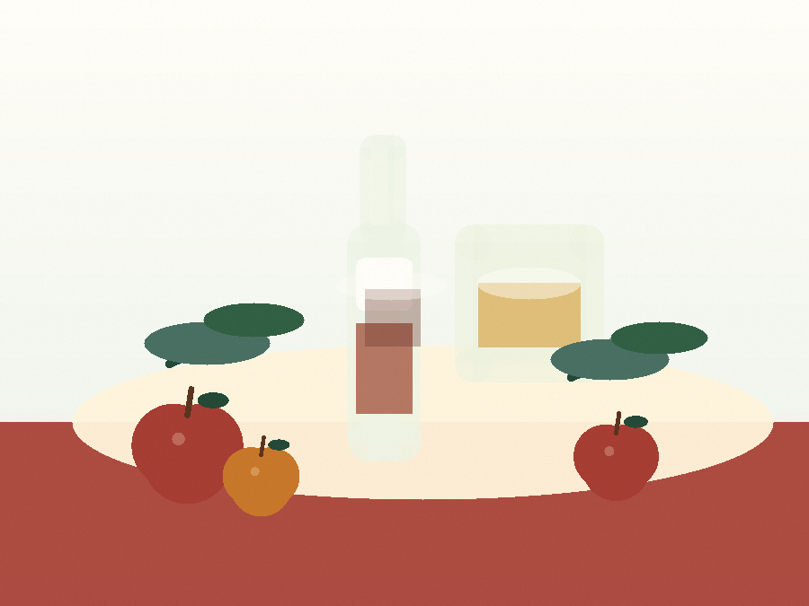

Сопствени јаболка
Плодови од сопствен насад, берени и селектирани кога сезоната е најдобра.
Преспанско јаболко. Семејна традиција. Природен вкус.
Природен јаболков сидер и оцет од сопствени домашно одгледани јаболка, направени во мали сезонски серии во с. Царев Двор, Ресен.
Плодови од сопствен насад, берени и селектирани кога сезоната е најдобра.
Без додадена вода, шеќер, конзерванси или вештачки додатоци.
Производство со внимание, следливост и контрола од јаболко до шише.
Нашата приказна
Во Преспа, јаболкото не е само суровина, туку дел од секојдневието, трудот и семејната приказна. Нашиот сидер и оцет се продолжение на традицијата во одгледување јаболка, со знаење што се пренесува од генерација на генерација.
Работиме со сопствени домашно одгледани јаболка и со мирен сезонски ритам. Се избираат здрави плодови, се преработуваат внимателно и се остава природната ферментација да го изгради вкусот. Целта е производ што е искрен, чист и препознатлив по регионот од кој доаѓа.

Производи
Два производи со ист корен: внимателно избрано јаболко, чиста преработка и природен вкус без непотребни додатоци.

Јаболков сидер
Лесен, овошен и освежителен пијалак добиен со контролирана ферментација на сок од сопствени јаболка. Направен за оние што сакаат природен вкус со јасен карактер на плодот.

Јаболков оцет
Јаболков оцет со природна киселост и чист овошен карактер. Добар избор за салати, маринади, зимница и секојдневна кујна каде што се бара едноставен, квалитетен производ.
Сезоналност
Производството е сезонско и го следи природниот ритам на јаболката. Кога плодот е подготвен, се работи внимателно, во мали серии и со контрола на секој чекор. Затоа секое шише носи вкус што не е брзан, туку направен со време и грижа.
Се избираат здрави јаболка од сопствениот насад.
Сокот се остава да развие природен вкус под контролирани услови.
Готовиот производ се пакува едноставно, во стаклена амбалажа.
Како работиме
Процесот е едноставен, но бара дисциплина: чиста суровина, чиста опрема, следење на ферментацијата и внимателно пакување.
Се избираат здрави јаболка, а се отстранува сè што не е соодветно за преработка.
Плодовите се мијат, се мелат и се цедат за да се добие свеж јаболков сок.
Сокот ферментира во контролирани услови, со внимание на време и температура.
Готовиот производ се подготвува за шише, без да се изгуби неговиот природен карактер.
Контакт
Испратете порака за достапност на сидер, нарачки за оцет, сезонски дегустации или локална набавка од производството во с. Царев Двор, Ресен.
с. Царев Двор, Ресен
contact@jabolko.mk